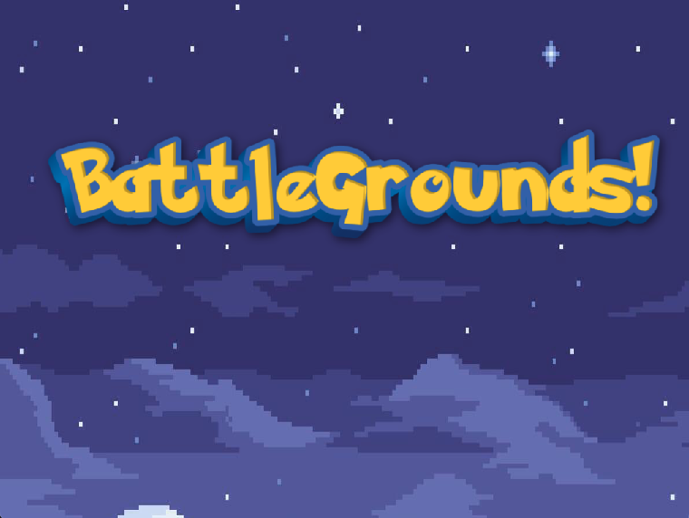
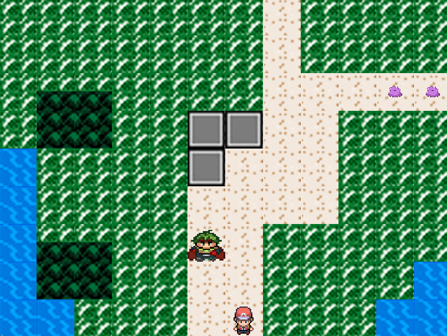
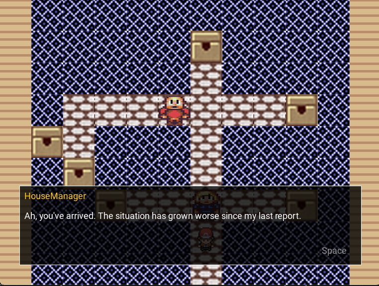
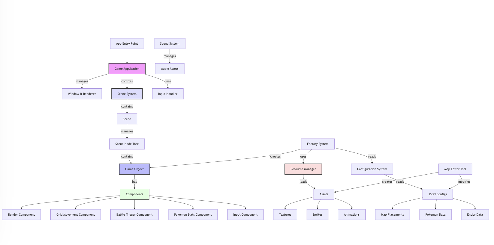

Watch the trailer to see the game and tools in action:
Below are some screenshots showcasing key features:
  Complete engine and API documentation:
View DocumentationHigh-level overview of the engine's core systems:
Download and play the game:
Download Game PackagePackage includes:
To build from source:
brew install sdl2 dub ldc sdl2_ttf sdl2_mixer sdl2_image dub --compiler=ldc2
Overall, we are very proud of what we built in the time we had, regarding both design and functionality. The component-based architecture and data-driven design allowed us to create a solid foundation for a Pokemon-style game. However, if we had 8 more weeks to work on this project, there are two main areas we would focus on: game depth/complexity and mechanics improvements.
In terms of complexity, we would significantly expand the game's content and systems. This would include adding a larger roster of Pokemon with more diverse characteristics, implementing a type system with advantages/weaknesses, and expanding the move pool beyond basic attacks. We would also develop a more advanced storyline with increased NPC interactions, more areas to explore, and add quest chains. Additional Pokemon features like evolution, status effects, and special abilities would bring the game closer to the depth of the original Pokemon games.
For game mechanics, we would focus on technical improvements and tool enhancement. This would include adding more sophisticated battle animations, particle effects for moves, and smoother transition animations between states. We would expand our Python-based game maker to support all entity types, allowing for easier creation of NPCs, items, and environmental objects. Additional tool improvements would include an animation editor for creating and modifying sprite animations, a battle move creator for designing new attacks, and a more comprehensive map editor with support for indoor areas and environmental variations.